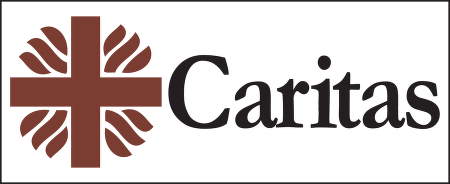

- Title Page
- Introduction
- The Islands and the Anthropologist
- Tsunami and First Response
- Wading In
- Second Tsunami
- In Search of Axes
- Steering a Sustainable Course
- Steering Committee
- Exchange Visit
- Nirnay Means Decision
- Up and Running
- Caritas Leans In
- Singh Sounds a Warning
- Midcourse Correction
- The SOPHIA Experiment
- Taking Stock
- SOPHIA Reports
Steering Committee
The first meeting of the SIF Steering Committee was held on June 21, 2005, at the Institute of Social Ecology. [29] Present were all five members: Fischer-Kowalski, for the institute, serving as chair; Friedrich Altenburg, head of the international project department for Caritas Austria; Clemens Dostal, representing the impresario André Heller and Universal Music; Dr. Wolfgang Lutz, program director for the World Population Program at the International Institute for Applied Systems Analysis and director of the Vienna Institute of Demography of the Austrian Academy of Sciences; and Dr. Christine Jasch, from the Institute for Ecological Economy Research in Vienna. Singh, who had returned to Vienna, also attended the meeting, as scientific advisor.

The agenda was packed and the mood, while professional, was optimistic. Asked about their hopes for SIF, the members spoke of “sustainability,” “useful actions,” “care and sensitivity” for the Nicobarese, and “harmony with the environment.” Altenburg was especially excited about the project. Caritas prided itself in being not just an emergency responder but a faithful partner, one of the 20 percent of NGOs that stay to rebuild communities after disaster relief is done. In its reconstruction work, Caritas favored three-year plans and direct engagement, and Altenburg saw SIF’s plan to involve both scientists and beneficiaries in “participative decision making” as new and promising. The Nicobars project might even serve Caritas as a pilot for similar collaborations in the future. [30]
Altenburg did ask for a change to the founding partnership agreement. Caritas was taking a chance with this project, because it would not have its own project manager in the islands. In order to ensure high-quality work, he asked that SIF formally commit to the standards of humanitarian engagement promulgated by the Sphere Project, as well as its Code of Conduct. The Sphere Project, launched eight years earlier in reaction to failures in humanitarian response during the Rwanda crisis, was the gold standard for NGO work, and the Steering Committee adopted this change unanimously. [31]
Discussion then turned to a wide range of sustainable projects that SIF might support in the Nicobars: fishing co-ops, eco-friendly housing, demonstration gardens, a gravity-based water delivery system, a handicrafts enterprise, a hostel for secondary students, a farm for conserving indigenous species, and so on. According to Singh, these projects also interested the Tribal Council and the Nicobar Youth Association, SIF’s implementation partners in the Nicobars.
Marina Fischer-Kowalski on the SIF mission
© Aftermath-The Second Flood, Golden Girls Filmproduktion, 2014
© Aftermath-The Second Flood, Golden Girls Filmproduktion, 2014
These local partners had been chosen not only because Singh had worked with them before, but because they were the only organizations in the Central Nicobars legally authorized to engage in development work. This was why Oxfam India had signed its own agreement with them in February. While Oxfam was still training staff and paying overhead costs for the NYA, its relations with the Nicobarese had recently soured, and the NYA would soon terminate the agreement, citing unreasonable accounting requirements, “fake promises,” and “insulting behavior.” [32] Oxfam had been informed of SIF’s intention to work with the NYA, so the path was clear to begin project negotiations.
The problem was that the Steering Committee could not travel to the Nicobars. It was still a disaster area, and the Indian government would deny access to anyone but Singh who, under the terms of the SIF partnership agreement, could not conduct financial negotiations. There seemed only one solution: invite members of the Tribal Council and NYA to Vienna for an “exchange visit.” It was Singh’s idea, modeled on Prince Rasheed’s visit to Vienna two years earlier. Meeting face to face, the Austrians and the Nicobarese could get to know each other and find ways to work together toward the island’s sustainable future.
[29] Unless otherwise noted, material in this section is taken from the agenda and minutes of the 1 st SIF Steering Committee Meeting, in SIF files.
[30] Kirsten Lundberg interview with Georg Matuschkowitz, Caritas Austria, February 25, 2014, in Vienna. All further quotes from Matuschkowitz are from that interview.
[31] The Sphere Project, The Humanitarian Charter and Minimum Standards in Disaster Response, The Sphere Project: Geneva, 1998.
[32] Letter from Portifer Joseph, President, Nicobar Youth Association, to Oxfam India, August 13, 2005, in SIF files.
Video - http://www.aftermath-thesecondflood.net/